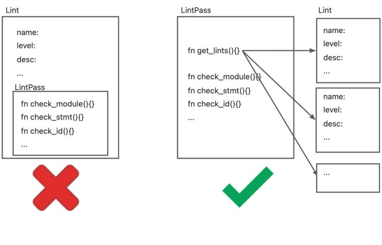
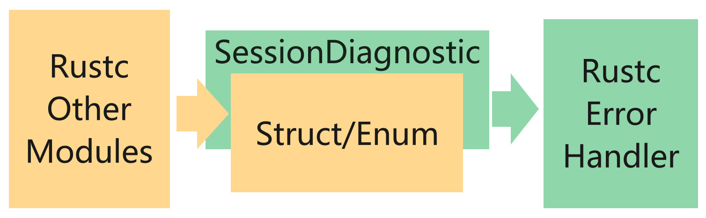
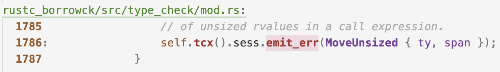
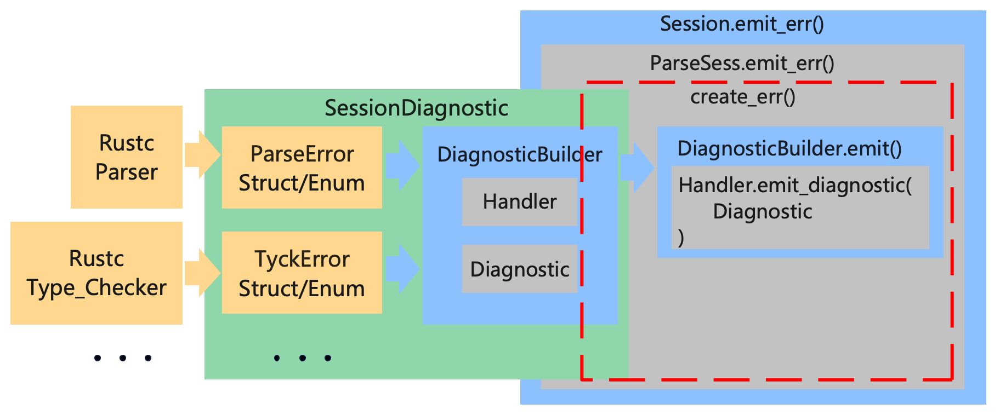

Rust Source Code Analysis
Target: Analysis and learn from the source code of Rust standard library, Rust compiler(Rustc) and open source project written by Rust.

- Github Repo: https://github.com/awesome-kusion/rust-code-book
- Read Online: https://awesome-kusion.github.io/rust-code-book
Preface
When I was working on KusionStack and KCLVM projects, I started to learn the source code of Rustc with the idea of learning the design of excellent compiler. I took some notes and documents during this process. With the suggestion of Chai, I organized them into an article and posted it. I didn't expect people to be interested in it, so I decided to continue writing articles on Rustc source code analysis. This is the original intention of writing this e-book.
KCLVM is a compiler we developed with Rust in the project of Kusion, and some parts of this book are applied to KCLVM. If you are interested in the cloud-native ecology and technology, you can learn about the project üëâ KusionStack. And if you are interested in Rust, programming languages or compilers, maybe you prefer üëâ KCLVM.
Finally, most of the content in these e-book are my personal understanding when reading the source code, as well as some descriptions in the rust-dev-guide. Owing to the limitation of my knowledge, there must be mistakes and errors in the book. So we welcome all forms of conrtibutions(fix typo/polish english/translation/write article or other) from everyone.
简介
Standard Library
Rust Compiler
Overview
Invocation
Lexer
语法分析
Sema
Lint
Background
Lint is a kind of static analysis tool, which originated from the C language. Lint tools usually check potential problems and errors in code, including (but not limited to) programming style (indentation, blank lines, spaces), code quality (unused variables, missing documents), and error codes (division by zero, duplicate definitions, circular references). Generally speaking, in addition to identifying errors, lint tools also have some fix/refactor suggest and auto fix capabilities. Using lint tools in the project can effectively reduce errors and improve the project quality. In addition, for a programming language, the lint tool is usually a prerequisite for the development of other tools, such as the error prompt of IDE plug-ins(e.g., LSP) and the pipeline detection of CI.
Lint vs. LintPass
Concepts
There are two main structures about lint in Rustc, Lint and LintPass. First, we need to distinguish the concepts of Lint and LintPass. In many documents of Rustc, they are both referred to as 'Lint', which is easy to confuse. The difference between them is explained by rustc-dev-guide as follows:
Lint declarations don't carry any "state" - they are merely global identifiers and descriptions of lints. We assert at runtime that they are not registered twice (by lint name). Lint passes are the meat of any lint.
In terms of definition, Lint is just a description of the lint check defined, such as name, level, description, code and other attributes. It doesn't carry any state of checking. Rustc checks the uniqueness of registered lints at runtime. LintPass is an implementation of lint, which contains the check_* methods that are called when checking.
In terms of code implementation, Lint is defined as a struct in Rust, and all lint definitions are an instance of this struct. And LintPass is a trait. The Trait is similar to the interface in Java/C++. Every definition of lintpass needs to implement the methods defined in the interface.
#![allow(unused)] fn main() { /// Specification of a single lint. #[derive(Copy, Clone, Debug)] pub struct Lint { pub name: &'static str, /// Default level for the lint. pub default_level: Level, /// Description of the lint or the issue it detects. /// /// e.g., "imports that are never used" pub desc: &'static str, ... } pub trait LintPass { fn name(&self) -> &'static str; } }
It should be noted that although we just said that trait is similar to an interface and Lint is a struct, the relationship between Lint and LintPass is not a "class" and its "methods" in OO. Instead, declaring LintPass will generate a struct with the same name, this struct implements the trait, and the get_lints() method in this struct will generate the corresponding Lint definition.

This is also consistent with the description of the rustc-dev-guide:
A lint might not have any lint pass that emits it, it could have many, or just one -- the compiler doesn't track whether a pass is in any way associated with a particular lint, and frequently lints are emitted as part of other work (e.g., type checking, etc.).
Definition of Lint and LintPass
Rustc provides macros for both Lint and LintPass to define their structure.
The macro declare_lint that defines Lint is simple, it can be found in rustc_lint_defs::lib.rs. The declare_lint macro parses the input arguments and produces a Lint struct named $NAME.
#![allow(unused)] fn main() { #[macro_export] macro_rules! declare_lint { ($(#[$attr:meta])* $vis: vis $NAME: ident, $Level: ident, $desc: expr) => ( $crate::declare_lint!( $(#[$attr])* $vis $NAME, $Level, $desc, ); ); ($(#[$attr:meta])* $vis: vis $NAME: ident, $Level: ident, $desc: expr, $(@feature_gate = $gate:expr;)? $(@future_incompatible = FutureIncompatibleInfo { $($field:ident : $val:expr),* $(,)* }; )? $($v:ident),*) => ( $(#[$attr])* $vis static $NAME: &$crate::Lint = &$crate::Lint { name: stringify!($NAME), default_level: $crate::$Level, desc: $desc, edition_lint_opts: None, is_plugin: false, $($v: true,)* $(feature_gate: Some($gate),)* $(future_incompatible: Some($crate::FutureIncompatibleInfo { $($field: $val,)* ..$crate::FutureIncompatibleInfo::default_fields_for_macro() }),)* ..$crate::Lint::default_fields_for_macro() }; ); ($(#[$attr:meta])* $vis: vis $NAME: ident, $Level: ident, $desc: expr, $lint_edition: expr => $edition_level: ident ) => ( $(#[$attr])* $vis static $NAME: &$crate::Lint = &$crate::Lint { name: stringify!($NAME), default_level: $crate::$Level, desc: $desc, edition_lint_opts: Some(($lint_edition, $crate::Level::$edition_level)), report_in_external_macro: false, is_plugin: false, }; ); } }
The definition of LintPass involves two macros:
- declare_lint_pass: Generate a struct named
$nameand call the macroimpl_lint_pass.
#![allow(unused)] fn main() { macro_rules! declare_lint_pass { ($(#[$m:meta])* $name:ident => [$($lint:expr),* $(,)?]) => { $(#[$m])* #[derive(Copy, Clone)] pub struct $name; $crate::impl_lint_pass!($name => [$($lint),*]); }; } }
- impl_lint_pass: Implements the
fn name()andfn get_lints()methods for the generatedLintPassstructure.
#![allow(unused)] fn main() { macro_rules! impl_lint_pass { ($ty:ty => [$($lint:expr),* $(,)?]) => { impl $crate::LintPass for $ty { fn name(&self) -> &'static str { stringify!($ty) } } impl $ty { pub fn get_lints() -> $crate::LintArray { $crate::lint_array!($($lint),*) } } }; } }
EarlyLintPass and LateLintPass
In the macro definition of LintPass, only the fn name() and fn get_lints() methods are defined, but the check_* functions for checking are not provided. This is because Rustc divides LintPass into two more specific categories: EarlyLintPass and LateLintPass. The main difference is whether the checked element has type information, i.e. is performed before or after the type checking. For example, WhileTrue checks for while true{...} in the code and prompts the user to use loop{...} instead it. This check does not require any type information and is therefore defined as an EarlyLint (impl EarlyLintPass for WhileTrue in the code.
#![allow(unused)] fn main() { declare_lint! { WHILE_TRUE, Warn, "suggest using `loop { }` instead of `while true { }`" } declare_lint_pass!(WhileTrue => [WHILE_TRUE]); impl EarlyLintPass for WhileTrue { fn check_expr(&mut self, cx: &EarlyContext<'_>, e: &ast::Expr) { ... } } }
Rustc uses 3 macros to define EarlyLintPass:
- early_lint_methods: early_lint_methods defines the
check_*functions that need to be implemented inEarlyLintPass, and passes these functions and the received parameters$argsto the next macro.
#![allow(unused)] fn main() { macro_rules! early_lint_methods { ($macro:path, $args:tt) => ( $macro!($args, [ fn check_param(a: &ast::Param); fn check_ident(a: &ast::Ident); fn check_crate(a: &ast::Crate); fn check_crate_post(a: &ast::Crate); ... ]); ) } }
- declare_early_lint_pass: Generate trait
EarlyLintPassand call macroexpand_early_lint_pass_methods.
#![allow(unused)] fn main() { macro_rules! declare_early_lint_pass { ([], [$($methods:tt)*]) => ( pub trait EarlyLintPass: LintPass { expand_early_lint_pass_methods!(&EarlyContext<'_>, [$($methods)*]); } ) } }
- expand_early_lint_pass_methods: Provides default implementations for
check_*methods: nothing to do({}in code).
#![allow(unused)] fn main() { macro_rules! expand_early_lint_pass_methods { ($context:ty, [$($(#[$attr:meta])* fn $name:ident($($param:ident: $arg:ty),*);)*]) => ( $(#[inline(always)] fn $name(&mut self, _: $context, $(_: $arg),*) {})* ) } }
The benefits are as follows:
- Because
LintPassis a trait, every definition ofLintPassneeds to implement all of its methods. But early lint and late lint occur at different stages of compilation, and the input parameters are also different (AST and HIR). Therefore, the definition of LintPass contains only two general methodsfn name()andfn get_lints(). The check methods are defined in the more specificEarlyLintPassandLateLintPass. - Likewise, for
EarlyLintPass, every definition of lintpass must implement all of its methods. But not every lintpass needs to check all nodes of the AST.expand_early_lint_pass_methodsprovides default implementations for its methods. In this way, when defining a specific lintpass, you only need to pay attention to implementing its related check methods. For example, for the definition ofWhileTrue, sincewhile true { }only appears in theast::Exprnode, it only needs to implement thecheck_exprfunction. Calling theWhileTruecheck function at any other node, such as callWhileTrue.check_ident()when checking an identifier node on the AST, will only execute an empty method as defined in the macroexpand_early_lint_pass_methods.
Meaning of pass
In Rustc, in addition to Lint and LintPass, there are some *Pass naming, such as Mir and MirPass, the rustc_passes package, etc. The Compilers, Principles, Techniques, & Tools has a corresponding explanation for Pass:
1.2.8 Combine multiple steps into a pass The previous discussion of steps was about the logical organization of a compiler. In a particular implementation, the activities of multiple steps can be combined into a pass. Each pass reads in an input file and produces an output file.
In the macro declare_lint_pass that declares LintPass, its second parameter is a list, indicating that a lintpass can generate multiple lints. There are also some CombinedLintPass in Rustc that also aggregates all built-in lints into one lintpass. This is basically the same as the definition of "pass" in the Dragon Book: LintPass can combine multiple Lint checks, each LintPass reads an AST/HIR and produces a corresponding result.
Simple design of Linter
In the definition of LintPass, a default implementation is provided for all check_* methods of each lintpass. So far, we can implement a simple Linter tool：
#![allow(unused)] fn main() { struct Linter { } impl ast_visit::Visitor for Linter { fn visit_crate(a: ast:crate){ for lintpass in lintpasses{ lintpass.check_crate(a) } walk_crate(); } fn visit_stmt(a: ast:stmt){ for lintpass in lintpasses{ lintpass.check_stmt(a) } walk_stmt(); } ... } let linter = Linter::new(); for c in crates{ linter.visit_crate(c); } }
Visitor is a tool for traversing the AST. Here, the visit_* methods are implemented for Linter, and all lintpass check_* methods are called during traversal. walk_* will continue to call other visit_* methods to traverse its child nodes. So, for each crate, just call the visit_crate() function to traverse the AST and complete the lint check.
CombinedLintpass
However, Rustc and Clippy provide more than 550 lint definitions. Considering the performance, it is obviously inappropriate to define a large number of lintpasses, register and call them separately. Rustc provides a better solution: since multiple lints can be organized into one lintpass, multiple lintpasses can also be combined into a CombinedLintPass.
Compiler lint passes are combined into one pass Within the compiler, for performance reasons, we usually do not register dozens of lint passes. Instead, we have a single lint pass of each variety (e.g., BuiltinCombinedModuleLateLintPass) which will internally call all of the individual lint passes; this is because then we get the benefits of static over dynamic dispatch for each of the (often empty) trait methods. Ideally, we'd not have to do this, since it adds to the complexity of understanding the code. However, with the current type-erased lint store approach, it is beneficial to do so for performance reasons.
BuiltinCombinedEarlyLintPass
Combinedlintpass is also divided into early and late. Take builtin's early lint as an example, rustc_ lint::src::lib.rs defines a BuiltinCombinedEarlyLintPass structure for these lintpasses.
#![allow(unused)] fn main() { early_lint_passes!(declare_combined_early_pass, [BuiltinCombinedEarlyLintPass]); }
Although this definition seems to have only one line, it summarizes 14 LintPass through the expansion of several macros, and each LintPass provides more than 50 'checks_*` method. Let's explain these macros one by one.
Define BuiltinCombinedEarlyLintPass by macros
- early_lint_passes
#![allow(unused)] fn main() { macro_rules! early_lint_passes { ($macro:path, $args:tt) => { $macro!( $args, [ UnusedParens: UnusedParens, UnusedBraces: UnusedBraces, UnusedImportBraces: UnusedImportBraces, UnsafeCode: UnsafeCode, AnonymousParameters: AnonymousParameters, EllipsisInclusiveRangePatterns: EllipsisInclusiveRangePatterns::default(), NonCamelCaseTypes: NonCamelCaseTypes, DeprecatedAttr: DeprecatedAttr::new(), WhileTrue: WhileTrue, NonAsciiIdents: NonAsciiIdents, HiddenUnicodeCodepoints: HiddenUnicodeCodepoints, IncompleteFeatures: IncompleteFeatures, RedundantSemicolons: RedundantSemicolons, UnusedDocComment: UnusedDocComment, ] ); }; } }
The first is the macro early_ lint_ passes. The main function of this macro is to define all early lintpass. The left side of :is the identifier of lintpass, and the right side of : is the constructor of lintpass. Therefore, ellipseinclusiverangepatterns::default() and deprecedattr::new() are differnet from others. early_ lint_ passes passes the defined early lintpass to the next macro together with the second parameter.
Through this macro, the previous definition of BuiltinCombinedEarlyLintPass is expanded to:
#![allow(unused)] fn main() { declare_combined_early_pass!([BuiltinCombinedEarlyLintPass], [ UnusedParens: UnusedParens, UnusedBraces: UnusedBraces, UnusedImportBraces: UnusedImportBraces, UnsafeCode: UnsafeCode, AnonymousParameters: AnonymousParameters, EllipsisInclusiveRangePatterns: EllipsisInclusiveRangePatterns::default(), NonCamelCaseTypes: NonCamelCaseTypes, DeprecatedAttr: DeprecatedAttr::new(), WhileTrue: WhileTrue, NonAsciiIdents: NonAsciiIdents, HiddenUnicodeCodepoints: HiddenUnicodeCodepoints, IncompleteFeatures: IncompleteFeatures, RedundantSemicolons: RedundantSemicolons, UnusedDocComment: UnusedDocComment, ]) }
- declare_combined_early_pass
#![allow(unused)] fn main() { macro_rules! declare_combined_early_pass { ([$name:ident], $passes:tt) => ( early_lint_methods!(declare_combined_early_lint_pass, [pub $name, $passes]); ) } }
Macro declare_combined_early_pass receives the name (BuiltinCombinedEarlyLintPass) and passes from macro early_lint_passes, and continues to pass them to macro early_lint_methods.
Through this macro, the definition of BuiltinCombinedEarlyLintPass expand to:
#![allow(unused)] fn main() { early_lint_methods!(declare_combined_early_lint_pass, [pub BuiltinCombinedEarlyLintPass, [ UnusedParens: UnusedParens, UnusedBraces: UnusedBraces, UnusedImportBraces: UnusedImportBraces, UnsafeCode: UnsafeCode, AnonymousParameters: AnonymousParameters, EllipsisInclusiveRangePatterns: EllipsisInclusiveRangePatterns::default(), NonCamelCaseTypes: NonCamelCaseTypes, DeprecatedAttr: DeprecatedAttr::new(), WhileTrue: WhileTrue, NonAsciiIdents: NonAsciiIdents, HiddenUnicodeCodepoints: HiddenUnicodeCodepoints, IncompleteFeatures: IncompleteFeatures, RedundantSemicolons: RedundantSemicolons, UnusedDocComment: UnusedDocComment, ] ]); }
- early_lint_methods
#![allow(unused)] fn main() { macro_rules! early_lint_methods { ($macro:path, $args:tt) => ( $macro!($args, [ fn check_param(a: &ast::Param); fn check_ident(a: &ast::Ident); fn check_crate(a: &ast::Crate); fn check_crate_post(a: &ast::Crate); ... ]); ) } }
Macro early_lint_methods has been explained earlier. It defines the methods check_* which need to be implemented in the EarlyLintPass, and pass these methods and the parameter $args to the next macro. Because BuiltinCombinedEarlyLintPass is also a kind of early lint, it is also necessary to implement these methods.
Through this macro, the definition of 'BuiltinCombinedEarlyLintPass' expand to:
#![allow(unused)] fn main() { declare_combined_early_lint_pass!( [pub BuiltinCombinedEarlyLintPass, [ UnusedParens: UnusedParens, UnusedBraces: UnusedBraces, UnusedImportBraces: UnusedImportBraces, UnsafeCode: UnsafeCode, AnonymousParameters: AnonymousParameters, EllipsisInclusiveRangePatterns: EllipsisInclusiveRangePatterns::default(), NonCamelCaseTypes: NonCamelCaseTypes, DeprecatedAttr: DeprecatedAttr::new(), WhileTrue: WhileTrue, NonAsciiIdents: NonAsciiIdents, HiddenUnicodeCodepoints: HiddenUnicodeCodepoints, IncompleteFeatures: IncompleteFeatures, RedundantSemicolons: RedundantSemicolons, UnusedDocComment: UnusedDocComment, ] ], [ fn check_param(a: &ast::Param); fn check_ident(a: &ast::Ident); fn check_crate(a: &ast::Crate); fn check_crate_post(a: &ast::Crate); ... ] ) }
- declare_combined_early_lint_pass
#![allow(unused)] fn main() { macro_rules! declare_combined_early_lint_pass { ([$v:vis $name:ident, [$($passes:ident: $constructor:expr,)*]], $methods:tt) => ( #[allow(non_snake_case)] $v struct $name { $($passes: $passes,)* } impl $name { $v fn new() -> Self { Self { $($passes: $constructor,)* } } $v fn get_lints() -> LintArray { let mut lints = Vec::new(); $(lints.extend_from_slice(&$passes::get_lints());)* lints } } impl EarlyLintPass for $name { expand_combined_early_lint_pass_methods!([$($passes),*], $methods); } #[allow(rustc::lint_pass_impl_without_macro)] impl LintPass for $name { fn name(&self) -> &'static str { panic!() } } ) } }
Macro declare_combined_early_lint_pass is the main structure for generating BuiltinCombinedEarlyLintPass. It does the following works:
- Generate a struct named
BuiltinCombinedEarlyLintPass, whose fields is the identifier provided by macroearly_lint_passes. - Implement methods
fn new()fn name()andfn get_lints(). The methodnew()uses constructor of lintpass provided by marcoearly_lint_passes. - Call the marco
expand_combined_early_lint_pass_methodsto implememt selfcheck_*methods.
Through this macro, the definition of BuiltinCombinedEarlyLintPass is changed to:
#![allow(unused)] fn main() { pub struct BuiltinCombinedEarlyLintPass { UnusedParens: UnusedParens, UnusedBraces: UnusedBraces, UnusedImportBraces: UnusedImportBraces, UnsafeCode: UnsafeCode, AnonymousParameters: AnonymousParameters, EllipsisInclusiveRangePatterns: EllipsisInclusiveRangePatterns, NonCamelCaseTypes: NonCamelCaseTypes, DeprecatedAttr: DeprecatedAttr, WhileTrue: WhileTrue, NonAsciiIdents: NonAsciiIdents, HiddenUnicodeCodepoints: HiddenUnicodeCodepoints, IncompleteFeatures: IncompleteFeatures, RedundantSemicolons: RedundantSemicolons, UnusedDocComment: UnusedDocComment, } impl BuiltinCombinedEarlyLintPass { pub fn new() -> Self { Self { UnusedParens: UnusedParens, UnusedBraces: UnusedBraces, UnusedImportBraces: UnusedImportBraces, UnsafeCode: UnsafeCode, AnonymousParameters: AnonymousParameters, EllipsisInclusiveRangePatterns: EllipsisInclusiveRangePatterns::default(), NonCamelCaseTypes: NonCamelCaseTypes, DeprecatedAttr: DeprecatedAttr::new(), WhileTrue: WhileTrue, NonAsciiIdents: NonAsciiIdents, HiddenUnicodeCodepoints: HiddenUnicodeCodepoints, IncompleteFeatures: IncompleteFeatures, RedundantSemicolons: RedundantSemicolons, UnusedDocComment: UnusedDocComment, } } pub fn get_lints() -> LintArray { let mut lints = Vec::new(); lints.extend_from_slice(&UnusedParens::get_lints()); lints.extend_from_slice(&UnusedBraces::get_lints()); lints.extend_from_slice(&UnusedImportBraces::get_lints()); lints.extend_from_slice(&UnsafeCode::get_lints()); lints.extend_from_slice(&AnonymousParameters::get_lints()); lints.extend_from_slice(&EllipsisInclusiveRangePatterns::get_lints()); lints.extend_from_slice(&NonCamelCaseTypes::get_lints()); lints.extend_from_slice(&DeprecatedAttr::get_lints()); lints.extend_from_slice(&WhileTrue::get_lints()); lints.extend_from_slice(&NonAsciiIdents::get_lints()); lints.extend_from_slice(&HiddenUnicodeCodepoints::get_lints()); lints.extend_from_slice(&IncompleteFeatures::get_lints()); lints.extend_from_slice(&RedundantSemicolons::get_lints()); lints.extend_from_slice(&UnusedDocComment::get_lints()); lints } } impl EarlyLintPass for BuiltinCombinedEarlyLintPass { expand_combined_early_lint_pass_methods!([$($passes),*], $methods); } #[allow(rustc::lint_pass_impl_without_macro)] impl LintPass for BuiltinCombinedEarlyLintPass { fn name(&self) -> &'static str { panic!() } } }
- expand_combined_early_lint_pass_methods
#![allow(unused)] fn main() { macro_rules! expand_combined_early_lint_pass_methods { ($passes:tt, [$($(#[$attr:meta])* fn $name:ident($($param:ident: $arg:ty),*);)*]) => ( $(fn $name(&mut self, context: &EarlyContext<'_>, $($param: $arg),*) { expand_combined_early_lint_pass_method!($passes, self, $name, (context, $($param),*)); })* ) } }
Marco expand_combined_early_lint_pass_methods explands all methods defined in early_lint_methods.
Through this macro, the definition of BuiltinCombinedEarlyLintPass is changed to(ignore other definitions):
#![allow(unused)] fn main() { impl EarlyLintPass for BuiltinCombinedEarlyLintPass { fn check_param(&mut self, context: &EarlyContext<'_>, a: &ast::Param) { expand_combined_early_lint_pass_method!($passes, self, $name, (context, $($param),*)); } fn check_ident(&mut self, context: &EarlyContext<'_>, a: &ast::Ident) { expand_combined_early_lint_pass_method!($passes, self, $name, (context, $($param),*)); } fn check_crate(&mut self, context: &EarlyContext<'_>, a: &ast::Crate) { expand_combined_early_lint_pass_method!($passes, self, $name, (context, $($param),*)); } ... } }
- expand_combined_early_lint_pass_method
#![allow(unused)] fn main() { macro_rules! expand_combined_early_lint_pass_method { ([$($passes:ident),*], $self: ident, $name: ident, $params:tt) => ({ $($self.$passes.$name $params;)* }) } }
Macro expand_combined_early_lint_pass_method call check_* methods defined in each LintPass.
Through this macro, the definition of BuiltinCombinedEarlyLintPass is changed to(ignore other definitions):
#![allow(unused)] fn main() { impl EarlyLintPass for BuiltinCombinedEarlyLintPass { fn check_param(&mut self, context: &EarlyContext<'_>, a: &ast::Param) { self.UnusedParens.check_param(context, a); self.UnusedBraces.check_param(context, a); self.UnusedImportBraces.check_param(context, a); ... } fn check_ident(&mut self, context: &EarlyContext<'_>, a: &ast::Ident) { self.UnusedParens.check_ident(context, a); self.UnusedBraces.check_ident(context, a); self.UnusedImportBraces.check_ident(context, a); ... } fn check_crate(&mut self, context: &EarlyContext<'_>, a: &ast::Crate) { self.UnusedParens.check_crate(context, a); self.UnusedBraces.check_crate(context, a); self.UnusedImportBraces.check_crate(context, a); ... } ... } }
Definition of BuiltinCombinedEarlyLintPass
Through the expansion of the above macro, BuiltinCombinedEarlyLintPass is defined as follows:
#![allow(unused)] fn main() { pub struct BuiltinCombinedEarlyLintPass { UnusedParens: UnusedParens, UnusedBraces: UnusedBraces, ... } impl BuiltinCombinedEarlyLintPass{ pub fn new() -> Self { UnusedParens: UnusedParens, UnusedBraces: UnusedBraces, ... } pub fn get_lints() -> LintArray { let mut lints = Vec::new(); lints.extend_from_slice(&UnusedParens::get_lints()); lints.extend_from_slice(&UnusedBraces::get_lints()); ... lints } } impl EarlyLintPass for BuiltinCombinedEarlyLintPass { fn check_crates(&mut self, context: &EarlyContext<'_>, a: &ast::Crate){ self.UnusedParens.check_crates (context, a); self.UnusedBraces.check_crates (context, a); ... } fn check_ident(&mut self, context: &EarlyContext<'_>, a: Ident){ self.UnusedParens.check_ident (context, a); self.UnusedBraces.check_ident (context, a); ... } .. } }
Through this definition, we can use the check_* method of BuiltinCombinedEarlyLintPass to run multiple lintpasses when traversing the AST.
Optimize the design of Linter
Based on CombinedLintPass，we can optimize the design of Linter:

Here, we use check_* of CombinedLintPass to run lint check when traversing the AST.
Although the effect is the same as before, because of the macro, all check_* methods and lintpass to be executed are collected into a structure, which is easier to manage. Similarly, because combinedlintpass actually calls the check methods of each lintpass, although the call may be as complex as the following figure, most of the check methods defined in lintpass are empty checks(just a {}) generated by macros, there will be no performance loss.

How Lint Works in Rustc
Finally, let's see how lint works in Rustc.
Lint's execution phase in Rustc
Rustc's design is similar to classic compilers, including lexical analysis, syntax analysis, semantic analysis, IR generation, IR optimization, code generation and other processes. In addition, some special processes, such as borrowing check, have been added to the compiler for Rust feature. Correspondingly, the intermediate representation of the code in the whole compilation process also has some extensions. I found the explanation of IR in the rust-dev-guide：
- Token stream: the lexer produces a stream of tokens directly from the source code. This stream of tokens is easier for the parser to deal with than raw text.
- Abstract Syntax Tree (AST): the abstract syntax tree is built from the stream of tokens produced by the lexer. It represents pretty much exactly what the user wrote. It helps to do some syntactic sanity checking (e.g. checking that a type is expected where the user wrote one).
- High-level IR (HIR): This is a sort of desugared AST. It's still close to what the user wrote syntactically, but it includes some implicit things such as some elided lifetimes, etc. This IR is amenable to type checking.
- Typed HIR (THIR): This is an intermediate between HIR and MIR, and used to be called High-level Abstract IR (HAIR). It is like the HIR but it is fully typed and a bit more desugared (e.g. method calls and implicit dereferences are made fully explicit). Moreover, it is easier to lower to MIR from THIR than from HIR.
- Middle-level IR (MIR): This IR is basically a Control-Flow Graph (CFG). A CFG is a type of diagram that shows the basic blocks of a program and how control flow can go between them. Likewise, MIR also has a bunch of basic blocks with simple typed statements inside them (e.g. assignment, simple computations, etc) and control flow edges to other basic blocks (e.g., calls, dropping values). MIR is used for borrow checking and other important dataflow-based checks, such as checking for uninitialized values. It is also used for a series of optimizations and for constant evaluation (via MIRI). Because MIR is still generic, we can do a lot of analyses here more efficiently than after monomorphization.
- LLVM IR: This is the standard form of all input to the LLVM compiler. LLVM IR is a sort of typed assembly language with lots of annotations. It's a standard format that is used by all compilers that use LLVM (e.g. the clang C compiler also outputs LLVM IR). LLVM IR is designed to be easy for other compilers to emit and also rich enough for LLVM to run a bunch of optimizations on it.
The above conversion process of Rust's IR also reflects the whole compilation process of Rust, which is summarized in one figure:
 `rustc_ driver::lib. Rs' controls each stage of the compilation process:
`rustc_ driver::lib. Rs' controls each stage of the compilation process:
#![allow(unused)] fn main() { fn run_compiler(...) -> interface::Result<()> { ... interface::run_compiler(config, |compiler| { let linker = compiler.enter(|queries| { ... queries.parse()?; // lexer parse ... queries.expansion()?; // resolver ... queries.prepare_outputs()?; ... queries.global_ctxt()?; // ast -> hir ... queries.ongoing_codegen()?; ... } } }
As described previously, lint is divided into early and late, which are executed in phases of AST -> HIR and HIR -> THIR respectively. Here we will also take the example of WhileTrue to see the whole process of Lint from definition to registration and execution. Meanwhile, WhileTrue is one of built-in early lint and is included in BuiltinCombinedEarlyLintPass.
Definition
Definitions of WhileTrue's lint and lintpass are defined in rustc_lint/src/builtin.rs:
#![allow(unused)] fn main() { declare_lint! { /// The `while_true` lint detects `while true { }`. /// /// ### Example /// /// ```rust,no_run /// while true { /// /// } /// ``` /// /// {{produces}} /// /// ### Explanation /// /// `while true` should be replaced with `loop`. A `loop` expression is /// the preferred way to write an infinite loop because it more directly /// expresses the intent of the loop. WHILE_TRUE, Warn, "suggest using `loop { }` instead of `while true { }`" } declare_lint_pass!(WhileTrue => [WHILE_TRUE]); impl EarlyLintPass for WhileTrue { fn check_expr(&mut self, cx: &EarlyContext<'_>, e: &ast::Expr) { ... } } }
As described previously,
- Macro
declare_lintdeclare a lint:WHILE_TRUE - Macro
declare_lint_passdeclare a lint:WhileTrue - Implement the
check_*methods defined inEarlyLintPassforWHILE_TRUE. Because this lintpass only checks the expr node, it only needs to implementcheck_ expr()method.
Registration
Whiletrue does not require separate registration and execution. Its checking method is expanded into BuiltinCombinedEarlyLintPass by macro. The BuiltinCombinedEarlyLintPass register and execute in the method queries.expansion().
#![allow(unused)] fn main() { pub fn expansion( &self, ) -> Result<&Query<(Rc<ast::Crate>, Rc<RefCell<BoxedResolver>>, Lrc<LintStore>)>> { tracing::trace!("expansion"); self.expansion.compute(|| { let crate_name = self.crate_name()?.peek().clone(); // register let (krate, lint_store) = self.register_plugins()?.take(); let _timer = self.session().timer("configure_and_expand"); let sess = self.session(); let mut resolver = passes::create_resolver( sess.clone(), self.codegen_backend().metadata_loader(), &krate, &crate_name, ); let krate = resolver.access(|resolver| { // execute passes::configure_and_expand(sess, &lint_store, krate, &crate_name, resolver) })?; Ok((Rc::new(krate), Rc::new(RefCell::new(resolver)), lint_store)) }) } }
The registration process will generate a defined lint structure and add it to the LintStore. Lint is divided into four categories: pre-expansion, early, late and late-module. Although lintpasses are executed at different stages in the compilation process, registration occurs at the same time.
The function call of lint registration process is as follows:
- rustc_driver::lib::run_compiler()
- rustc_interface::queries::Queries.expansion()
- rustc_interface::queries::Queries.register_plugins()
- rustc_lint::lib::new_lint_store()
- rustc_lint::lib::register_builtins()
Here, the default compilation process will execute the statement in the else branch, BuiltinCombinedEarlyLintPass::get_lints() will generate WhileTrue and added it to LintStore.
#![allow(unused)] fn main() { if no_interleave_lints { pre_expansion_lint_passes!(register_passes, register_pre_expansion_pass); early_lint_passes!(register_passes, register_early_pass); late_lint_passes!(register_passes, register_late_pass); late_lint_mod_passes!(register_passes, register_late_mod_pass); } else { store.register_lints(&BuiltinCombinedPreExpansionLintPass::get_lints()); store.register_lints(&BuiltinCombinedEarlyLintPass::get_lints()); store.register_lints(&BuiltinCombinedModuleLateLintPass::get_lints()); store.register_lints(&BuiltinCombinedLateLintPass::get_lints()); } }
Execution
The execution of different lintpass occurs at different stages of the compilation process. The function call of the BuiltinCombinedEarlyLintPass execution process are as follows:
- rustc_driver::lib::run_compiler()
- rustc_interface::queries::Queries.expansion()
- rustc_interface::passes::configure_and_expand()
- rustc_lint::early::check_ast_node()
- rustc_lint::early::early_lint_node()
首先，在 configure_and_expand() 函数中，执行了 pre-expansion 和 early 两种 lintpass。注册时使用了 BuiltinCombinedEarlyLintPass::get_lints() 方法生成 lints，而这里用 BuiltinCombinedEarlyLintPass::new() 方法生成了 lintpass。
First, in function configure_ and_expand(), pre-expansion and early lintpass are executed. Lints which generated by BuiltinCombinedEarlyLintPass::get_lints() were used for registration, and here, and lintpasses which generated by BuiltinCombinedEarlyLintPass::new() were used for execution.
#![allow(unused)] fn main() { pub fn configure_and_expand( sess: &Session, lint_store: &LintStore, mut krate: ast::Crate, crate_name: &str, resolver: &mut Resolver<'_>, ) -> Result<ast::Crate> { pre_expansion_lint(sess, lint_store, resolver.registered_tools(), &krate, crate_name); ... sess.time("early_lint_checks", || { let lint_buffer = Some(std::mem::take(resolver.lint_buffer())); rustc_lint::check_ast_node( sess, false, lint_store, resolver.registered_tools(), lint_buffer, rustc_lint::BuiltinCombinedEarlyLintPass::new(), &krate, ) }); } }
Lint execution finally occurs in function rustc_lint::early::early_lint_node(). Compare early_ lint_ Node() and the pseudo-code at the end of the CombinedLintPass section:

They have the following relationship:
- The parameter
passis theBuiltinCombinedEarlyLintPasscreated inconfigure_and_expand(). It corresponds tocombinedlintpass。. EarlyContextAndPasscombinedpassandcontext, and implement thevisitor. It corresponds toLinter.check_node.check(cx)callcx.pass.check_crate()and execute lint check. According to the definition ofBuiltinCombinedEarlyLintPass, this method will call allcheck_crate()defined in builtin early lint, and runast_visit::walk_crate()to traverses sub-node. It corresponds tovisit_crate().
no_interleave_lints
Although Rustc combines lintpass into combinedlintpass in consideration of performance, it provides some compilation parameters to configure lint. Among them, the parameter no_interleave_lints is used in the registration and execution of lint. This parameter defaults to false, indicating whether to execute each lint separately. By modifying this parameter during compilation, each lint can be registered separately and lintpass can be executed separately. This design provides better flexibility and customization (for example, you can benchmark each lint separately).
#![allow(unused)] fn main() { if no_interleave_lints { pre_expansion_lint_passes!(register_passes, register_pre_expansion_pass); early_lint_passes!(register_passes, register_early_pass); late_lint_passes!(register_passes, register_late_pass); late_lint_mod_passes!(register_passes, register_late_mod_pass); } else { store.register_lints(&BuiltinCombinedPreExpansionLintPass::get_lints()); store.register_lints(&BuiltinCombinedEarlyLintPass::get_lints()); store.register_lints(&BuiltinCombinedModuleLateLintPass::get_lints()); store.register_lints(&BuiltinCombinedLateLintPass::get_lints()); } }
#![allow(unused)] fn main() { pub fn check_ast_node<'a>(...) { if sess.opts.debugging_opts.no_interleave_lints { for (i, pass) in passes.iter_mut().enumerate() { buffered = sess.prof.extra_verbose_generic_activity("run_lint", pass.name()).run(|| { early_lint_node( sess, !pre_expansion && i == 0, lint_store, registered_tools, buffered, EarlyLintPassObjects { lints: slice::from_mut(pass) }, check_node, ) }); } } else { buffered = early_lint_node( sess, !pre_expansion, lint_store, registered_tools, buffered, builtin_lints, check_node, ); ... } } }
Summary
So far, we have analyzed the complete process of a lint in Rustc, including defining a lint, implementing the corresponding lintpass, registration and execution. We can also use these macros to define new lint and lintpass (e.g., extension in Clippy. It works in a similar way). Of course, lint in Rustc is far more than that. I only share a small part of it that I can understand and I have learned. I hope it can help you.
In addition to this, we have practiced part of this content in Project KCLVM. You can find more detailed design and implementation of lint in issue and PR, including the definition of visitor, lint, lintpass, combinedlintpass, and execution of lint in resolver. Welcome for your comments.
Codegen
General
Rust 的错误信息输出原理概述
1. 背景
最近在参与 KusionStack 内置的领域语言 —— KCL 配置语言编译器 的开发，需要开发编译器的错误处理模块，由于 KCL 使用 Rust 开发的，因此打算来学学 Rust 语言的错误处理模块是怎么做的。
2. 介绍
单纯从 Rustc 源码的目录结构中看，Rustc 中关于错误处理的部分主要集中在 rustc_errors 、rustc_error_codes 和 rustc_error_message 三个目录下，但是在看源码的过程中我发现由于 Rustc 代码量大，并且错误处理模块涉及到很多其他的模块，单纯的看这三个目录下的代码很容易看晕，剖析起来也比较困难。因此，我打算将这部分的的源码剖析拆分成几个部分，这篇文章主要结合 Rustc 的官方文档和 Rustc 源码进行结构的梳理。
因此本文的核心思路只是对错误处理部分的结构进行梳理，目标就是梳理一下在 Rustc 对 Rust 程序进行解析的过程中，错误是如何从分析过程一步一步传递到终端输出成诊断信息的。对于一些复杂且与错误诊断信息输出无关的内容，我们先暂且略过不做深究。留个坑后面再填，先把结构梳理清楚，也有助于我们后续一步一步的对源码进行更加深入清晰的剖析，防止我们在 Rustc 大量的源码中迷路。并且为了能更加清晰的看代码的结构，本文对使用的代码片段做了处理，去掉了生命周期等与代码执行逻辑无关的部分。
3. 诊断信息长啥样？
首先，看源码之前，先看看 Rust 的诊断信息的格式。如下图所示：

根据 Rustc 文档中的描述，上述信息可以分为下面5个部分，
-
Level 等级 (错误，警告等等)，这部分主要用来说明当前消息的严重程度。
-
Code 代码或者翻译成编号更好一些 (例如：对于“错误的类型”这种诊断信息，它对应的编号是E0308)，这个编号是一个索引，用户可以通过这个索引找到当前错误更加完整的描述信息。通过 lint 创建的诊断信息没有这个编号。
注：我后面又查了一下，rustc 官方把 Code 称作 Rust Compiler Error Index。 -
Message 消息，描述当前发生的问题的主要内容，这个消息的内容应该是通用的独立的，即使没有其他内容只看这一条信息的话，也能有所帮助。
-
Diagnostic Window 诊断窗口，主要负责展示出现问题的代码上下文相关的信息。
-
Sub-diagnostic 子诊断信息，任何错误都有很多的子诊断信息并且他们看起来都和诊断信息的主部分相似。
4. 诊断信息从哪来？
在了解了 Rustc 诊断信息之后，我们看下 Rustc 是如何构造这样的诊断信息的。在这部分 Rustc 官方提供了两种方式，
- 实现 rustc_sessions 提供的 trait。
- 用 rustc_macros 中为输出诊断信息准备的属性宏，自动实现 rustc_sessions 提供的 trait。
直接看上面这两点不太好理解，主要的流程可以参考下面这张图，

其中，黄色部分表示在 Rustc 的不同模块中，定义各自的错误/警告等异常类型的结构体 Struct (注：枚举也可以，本文是一个概述，为了方便描述所以下面就只列Struct了)。绿色部分表示在Rustc的错误处理模块提供了一个 trait SessionDiagnostic。不同模块内部定义的 Struct 实现这个 trait SessionDiagnostic。trait SessionDiagnostic 的具体实现就是将 Struct 中输出诊断信息需要的内容抽取出来封装好，返回给 Rustc 的错误处理模块用来输出。
这就是上面提到的实现错误模块提供的 trait。这个 trait SessionDiagnostic 的源码如下：
#![allow(unused)] fn main() { // rustc/compiler/rustc_session/src/session.rs pub trait SessionDiagnostic <T: EmissionGuarantee = ErrorGuaranteed> { fn into_diagnostic( self, sess: & ParseSess ) -> DiagnosticBuilder<T>; } }
以 Rustc 文档中给出的错误结构为例：
#![allow(unused)] fn main() { pub struct FieldAlreadyDeclared { pub field_name: Ident, pub span: Span, pub prev_span: Span, } }
按照 Rustc 的官方描述，要想输出 struct FieldAlreadyDeclared 对应的错误信息，就要实现 trait SessionDiagnostic。Rustc 的源码内部定义的错误结构目前完全采用第二种方式。
在 Rustc 提供的官方文档上，提供了 trait SessionDiagnostic 的具体实现。
#![allow(unused)] fn main() { impl SessionDiagnostic for FieldAlreadyDeclared { fn into_diagnostic(self, sess: Session) -> DiagnosticBuilder { let mut diag = sess.struct_err(...); diag.set_span(self.span); diag.span_label(...); ... diag } } }
上面代码展示了如何为 Struct FieldAlreadyDeclared 实现 trait SessionDiagnostic，具体的代码细节看不懂也不用急，这里只做一个展示，代码的细节不是我们本文的主题，过早的深入代码细节容易迷路，只要知道这部分代码从 Struct FieldAlreadyDeclared 抽取出了输出诊断信息需要的内容，并封装到了 DiagnosticBuilder 中返回。
那么怎么理解第二种方式呢？以上面的代码为例，实现 trait SessionDiagnostic 主要是将 Struct FieldAlreadyDeclared 中需要输出到诊断信息中的内容，抽取出来，填充到 DiagnosticBuilder 中，这个过程其实就是在搬砖，将组成诊断信息的砖块从 Struct FieldAlreadyDeclared 搬运到 DiagnosticBuilder 中，因此，这个过程可以自动化，当我们定义一个新的错误 Struct 的时候，砖块不需要我们自己搬，我们可以写一个程序帮我们搬，我们只需要在定义 Struct 的时候标注出来哪些砖需要搬就可以了。
所以，Rustc 内部通过属性宏的方式写好了搬砖的程序，这个搬砖程序为我们提供了一些注解，在定义新的错误 Struct 时，只需要通过注解标注出哪些砖要搬，Rustc 内部的属性宏就会为我们自动实现 trait SessionDiagnostic。同样是 Struct FieldAlreadyDeclared，使用第二种方式的代码如下：
#![allow(unused)] fn main() { #[derive(SessionDiagnostic)] #[diag(typeck::field_already_declared, code = "E0124")] pub struct FieldAlreadyDeclared { pub field_name: Ident, #[primary_span] #[label] pub span: Span, #[label(typeck::previous_decl_label)] pub prev_span: Span, } }
其中，通过注解 #[derive(SessionDiagnostic)] 使用 rustc_sessions 内部实现的属性宏，通过注解[diag(typeck::field_already_declared, code = "E0124")] 说明当前诊断信息输出的文本信息与前面提到的当前诊断信息的编号，最后通过注解 #[primary_span], #[label] 和 #[label(typeck::previous_decl_label)] 注解标注了出现问题的代码上下文相关的信息。
定义了带有注解的 Struct 或者为 Struct 实现了 trait SessionDiagnostic 后，接下来要做什么？Rustc 文档是这么说的。
Now that we've defined our diagnostic, how do we use it? It's quite straightforward, just create an instance of the struct and pass it to emit_err (or emit_warning).
现在，我们已经定义了我们的诊断信息，那我们如何使用它呢？这非常简单，我们只需要创建一个结构体的实例，并将它传递给 emit_err() 或者 emit_warning() 方法就可以了。
#![allow(unused)] fn main() { tcx.sess.emit_err(FieldAlreadyDeclared { field_name: f.ident, span: f.span, prev_span, }); }
不太明白，但是得到了一个关键方法 emit_err() ，通过这个方法将错误的诊断信息输出到终端，那就在源码里全局搜索一下这个方法：

找到了这个方法的定义如下：
#![allow(unused)] fn main() { // 这个方法在 Struct Session 中。 impl Session{ pub fn emit_err( &self, err: impl SessionDiagnostic ) -> ErrorGuaranteed { self.parse_sess.emit_err(err) } } }
我们顺着方法的调用链路连续点进去看看，
#![allow(unused)] fn main() { // self.parse_sess.emit_err(err) impl ParseSess{ pub fn emit_err( &self, err: impl SessionDiagnostic ) -> ErrorGuaranteed { self.create_err(err).emit() } } // self.create_err(err) impl ParseSess{ pub fn create_err( &'a self, err: impl SessionDiagnostic, ) -> DiagnosticBuilder<ErrorGuaranteed> { err.into_diagnostic(self) } } // self.create_err(err).emit() impl DiagnosticBuilder { pub fn emit(&mut self) -> G { ...... } } }
看代码好像明白了，把上面错误处理过程的图细化一下：

如图所示，我在图的右面增加了一些东西，黄色的部分没有太大的变化，Rustc 其他的模块定义错误的 Struct，绿色的部分增加了一些内容，细化了 trait SessionDiagnostic 的主要实现，根据黄色的 Struct 提供的内容生成蓝色的 DiagnosticBuilder。生成的 DiagnosticBuilder 中，内置 emit() 方法用来将诊断信息输出到终端，这个 emit() 方法最后会在 Session 中被调用。
在 rustc 中通过 Struct Session 调用生成的 DiagnosticBuilder 来输出诊断信息，具体的调用过程如上图右侧所示，Struct Session 内置了 Struct ParseSess ,这里包了两层 emit_err() 方法，并且在方法 ParseSess.emit_err() 中，调用了 ParseSess.create_err() 方法，这个方法接受 trait SessionDiagnostic 的实现，并调用 trait SessionDiagnostic 提供的 into_diagnostic() 方法获取 DiagnosticBuilder 实例，随后调用 DiagnosticBuilder 内置的 emit() 方法将诊断信息输出到终端。
看到这里，问题又来了，Rustc 通过 Session 接收 DiagnosticBuilder 输出诊断信息，这个 Session 是什么？这个 Session 是如何与 Rustc 其他模块联动的呢？或者说这个 Session 是怎么被调用的呢？
关于 Session 是什么，这不是本文的重点，为了防止迷路，这里先刨个坑，后续的文章中看看 Session 是什么，接下来，我们先来看看 Session 是怎么被调用来处理错误的。我们在全局搜索一下 sess.emit_err() 这个关键字，看看 rustc 是如何通过 Session 输出诊断信息的。
可以看到，在Rustc中很多地方都通过 Session 输出错误信息。

我看了一下，挑了几个其中比较典型，见名知意的地方。首先是在 Ructc 的语法解析器 rustc_parse 中，在进行语法分析的过程中遇到错误，会通过 sess.emit_err() 方法输出错误的诊断信息。

然后，在 rustc 的类型检查器 TypeChecker 中，所有权借用检查 rustc_borrowck 部分和类型检查部分 rustc_typeck 在检查到错误时会通过 sess.emit_err() 方法输出错误的诊断信息。与 rustc_parse 不同的是 TypeChecker 并不直接将 Session 实例作为结构体成员而是通过一个获取上下文的方法 tcx() 获取 Session 实例。


这个上下文方法 tcx() 的细节以及上下文的结构也是暂不深究，目前我们只需要知道 TypeChecker 也是通过 Session 输出诊断信息的就够了。然后，我们来浅看一下他们是如何借助 Session 输出错误的信息的。
首先，看看 rustc_parse 中关于 Session 的部分：
#![allow(unused)] fn main() { pub struct Parser { pub sess: & ParseSess, ...... } // 在 Parser 解析 Rust 语言的时候,会调用emit_err方法输出诊断信息。 self.sess.emit_err(...) }
见名知意给我带来了一点误判， Parser 内置的是 ParseSess 而不是 Session。所以，可以借助上面那个图的结构，给 Parser 错误处理的局部也单独画一张图。

之前的图中已经展示了内部的细节，这里就不展示了，这里只展示 trait SessionDiagnostic 和 Parser 之间的关系，(注：上图中的 Parse() 方法是我起的名字，指的是 Rustc中 对 Rust 程序语法分析的过程，在 Rustc 源程序中这个方法并不一定存在，具体用的是什么方法不是本文的重点，但是只要是编译器就一定有 parse 过程，在不同的编译器中 parse 过程的名字可能不同。)
如图所示，在对 Rust 程序进行语法分析的过程中，如果出现错误，就实例化一个实现了 trait SessionDiagnostic 的错误 Struct 结构，并把它抛给 Parser 内置的 ParseSess 中的 emit_err() 方法将诊断信息输出。
然后，再看看 rustc_borrowck 和 rustc_typeck，从调用方式来看，他们不是直接内置 Session 的，他们应该是内置了一个上下文相关的结构，然后那个上下文相关的结构中包含 Session 。
#![allow(unused)] fn main() { self.tcx().sess.emit_err(MoveUnsized { ty, span }); }
点进 self 看一下，可以看到这是一个类型检查器 TypeChecker ，找到上下文结构并点进去深度优先的搜索 Session 或者 ParseSess 结构，为了防止大家看的时候迷路，搜索过程就不写了，这里直接展示搜索结果。
#![allow(unused)] fn main() { struct TypeChecker { infcx: & InferCtxt, ...... } pub struct InferCtxt { pub tcx: TyCtxt, ...... } pub struct TyCtxt { gcx: & GlobalCtxt, } pub struct GlobalCtxt { pub sess: & Session, // Session 在这里 .... } }
藏的够深的，不过好在我们还是把它挖了出来，目前聚焦于错误处理，所以暂时不用关心这些上下文结构 (XXXCtxt) 都是什么意思。

如上图所示，与 Parser 的部分同理，ty_check() 是我自己写的方法，代指 TypeChecker 对 Rust 程序进行类型检查的过程，目前聚焦于错误处理，所以 InferCtxt，TyCtxt 和 GlobalCtxt 等上下文结构我就缩写为 XXXCtx 了，可以看到，这个过程和 Parser 错误处理的过程是一样的，在类型检查的过程中出现错误，就实例化一个实现了 trait SessionDiagnostic 的结构，并把它抛给 TypeChecker 内置的各种上下文中内置的 Session 中的 emit_err() 方法将诊断信息输出。
看到这里，压力来到了 Session 和 ParseSess 这边，既然大家都把错误抛给他，那就来看看它里面干了啥。
#![allow(unused)] fn main() { pub struct Session { pub parse_sess: ParseSess, ...... } pub struct ParseSess { pub span_diagnostic: Handler, ...... } }
看不太明白，再把之前的代码拿来看看
#![allow(unused)] fn main() { // self.parse_sess.emit_err(err) impl ParseSess{ pub fn emit_err( & self, err: impl SessionDiagnostic ) -> ErrorGuaranteed { self.create_err(err).emit() } } // 这个方法是 self.create_err(err) impl ParseSess{ pub fn create_err( & self, err: impl SessionDiagnostic, ) -> DiagnosticBuilder<ErrorGuaranteed> { err.into_diagnostic(self) } } // 这个方法是 self.create_err(err).emit() impl DiagnosticBuilder { pub fn emit(&mut self) -> G { ...... /// 看来，是时候把这里省略的代码展开了... } } }
展开上述第21行的代码，看到这是一个 trait 的抽象接口：
#![allow(unused)] fn main() { impl<G: EmissionGuarantee> DiagnosticBuilder<G> { pub fn emit(&mut self) -> G { // 省略的代码 G::diagnostic_builder_emit_producing_guarantee(self) } // 省略的代码是一个trait的抽象接口。 pub trait EmissionGuarantee: Sized { fn diagnostic_builder_emit_producing_guarantee( db: &mut DiagnosticBuilder ) -> Self; ... } }
为了防止迷路，先不深究 EmissionGuarantee 是做什么的，只关注他提供的输出诊断信息到终端的功能就好了。 然后，我们在全局搜索 EmissionGuarantee，找一个 EmissionGuarantee 的实现，看看他是如何输出信息的。
#![allow(unused)] fn main() { impl EmissionGuarantee for ErrorGuaranteed { fn diagnostic_builder_emit_producing_guarantee( db: &mut DiagnosticBuilder<Self> ) -> Self { match db.inner.state { DiagnosticBuilderState::Emittable(handler) => { ... let guar = handler.emit_diagnostic(&mut db.inner.diagnostic); ... } DiagnosticBuilderState::AlreadyEmittedOrDuringCancellation => { ...... } } } } }
看到上面的代码，我觉得压力来到了 DiagnosticBuilder 这边，来都来了，得看看。
#![allow(unused)] fn main() { // match db.inner.state pub struct DiagnosticBuilder<G: EmissionGuarantee> { inner: DiagnosticBuilderInner, ... } struct DiagnosticBuilderInner { state: DiagnosticBuilderState, diagnostic: Box<Diagnostic>, } // match db.inner.state enum DiagnosticBuilderState { Emittable(& Handler), AlreadyEmittedOrDuringCancellation, } }
可以看到，最后是通过 DiagnosticBuilderState 中的 Handler 输出得诊断信息。
#![allow(unused)] fn main() { /// A handler deals with errors and other compiler output. /// Certain errors (fatal, bug, unimpl) may cause immediate exit, /// others log errors for later reporting. pub struct Handler { flags: HandlerFlags, inner: Lock<HandlerInner>, } }
到 Handler 这里，看看注释，我觉得可以了，我们知道了所有错误的诊断信息，最后都通过 Handler 输出到终端，到这里，可以再把上面的图细化一下：

如图所示，我们在图中将 DiagnosticBuilder 内部的一点点细节画进去了，先不考虑 EmissionGuarantee。 DiagnosticBuilder 中包含输出诊断信息的 Handler 和保存诊断信息内容的 Diagnostic ，在 Session 和 ParseSess 中，会先调用 SessionDiagnostic 的 into_diagnostic() 方法，获得 DiagnosticBuilder，然后调用 DiagnoaticBuilder 的 emit() 方法输出诊断信息，在 emit() 方法中，会调用 DiagnoaticBuilder 内置的 Handler 并将 DiagnoaticBuilder 中的 Diagnostic 输出到终端。
总结
在本文中我们只涉猎了 Rustc 中错误处理模块很小的一部分，通过这一部分的浅看，我们大概的了解了一下 Rustc 中错误从出现到变成诊断信息输出到终端的整个流程。最后以上文中提到的 rustc_parser 和 rustc_type_checker 为例，一张图收尾。

Rustc 错误处理模块的三部分:
- 编译器的各个部分自定义错误的结构，保存错误信息。
- SessionDiagnostic 负责将各部分自定义错误的结构转换为 DiagnosticBuilder。
- Session/ParseSess 负责调用 SessionDiagnostic 提供的接口获得 DiagnosticBuilder ，并调用 DiagnosticBuilder 内置的方法输出诊断信息。
如果还是有一点绕晕了，在上面这个图上再加一笔，通过红色的尖头我们可以看到 Rust 中的一个异常包含的信息的从发生错误的地方到开发者面前的主要流向：

从上图右面的部分可以看到，错误信息并不是直接从 DiagnosticBuilder 中发送到开发者面前的，而是先从 Session 兜了个圈子，那为什么要这么做呢？这里先刨个坑，后续我们将进一步深入到 Rustc 的源码当中去，详细剖析解读一下各部分的源码结构并且理解一下 Rustc 的开发者增加各个部分的动机。
本期挖坑
- Session 和 ParseSess 到底是什么 ？
- 为什么搜索 emit_err() 没有涉及到词法分析 Lexer 和代码生成 CodeGen 的部分，这两个部分的错误是怎么处理的 ？
- EmissionGuarantee 这个结构在错误处理的过程中是做什么的 ？
参考
- KusionStack: https://github.com/KusionStack/kusion
- KCL 配置语言编译器: https://github.com/KusionStack/KCLVM
- Rustc 官方文档: https://rustc-dev-guide.rust-lang.org/
- Rustc 源码: https://github.com/rust-lang/rust
- Rust Compiler Error Index: https://doc.rust-lang.org/error-index.html
SourceMap & Span
Rust外围工具
Rust Open Source Project
KCL

Kusion Configuration Language (KCL) is an open source constraint-based record & functional language mainly used in Kusion Stack. KCL improves the writing of a large number of complicated configuration data and logic through mature programming language theory and practice, and simplifies and verifies the development and operation of configuration through declarative syntax combined with technical features such as static typing.
Features
- Well-designed: Independently designed syntax, semantics, runtime and system modules, providing core language elements such as configuration, schema, lambda and rule.
- Modeling: Schema-centric modeling abstraction.
- Easy to use: the language itself covers most configuration and policy functions.
- Stability: Static type system and custom rule constraints.
- Scalability: Configuration block definition ability and rich configuration merge coverage ability.
- Automation capabilities: Rich language-level CRUD API and multi-language API.
- High performance: The language compiler is implemented in Rust and C mainly with LLVM optimizer, supports compilation to native and WASM targets and executes efficiently.
- Cloud Native Affinity: Native support for OpenAPI and Kubernetes CRD Specs to KCL conversion, support for Kubernetes YAML specification.
- Development friendly: Rich language tools (Lint, Test, Vet, Doc, etc.), IDE Plugins and language plugins.
What is it for?
You can use KCL to
- generate low-level configuration data like JSON, YAML, etc.
- reduce boilerplate in configuration data with the schema modeling.
- define schemas with rule constraints for configuration data and validate them automatically.
- write configuration data separately and merge them using different strategies.
- organize, simplify, unify and manage large configurations without side effects.
- define your application delivery and operation ecosystem with Kusion Stack.
Installation
Download the latest release from GitHub and add {install-location}/kclvm/bin to the environment PATH.
Quick Showcase
./samples/fib.k is an example of calculating the Fibonacci sequence.
schema Fib:
n1: int = n - 1
n2: int = n1 - 1
n: int
value: int
if n <= 1:
value = 1
elif n == 2:
value = 1
else:
value = Fib {n: n1}.value + Fib {n: n2}.value
fib8 = Fib {n: 8}.value
We can execute the following command to get a YAML output.
kcl ./samples/fib.k
YAML output
fib8: 21
Documentation
Detailed documentation is available at https://kusionstack.io
Contributing
See Developing Guide.
Roadmap
See KCLVM Roadmap.
License
[Apache License Version 2.0]